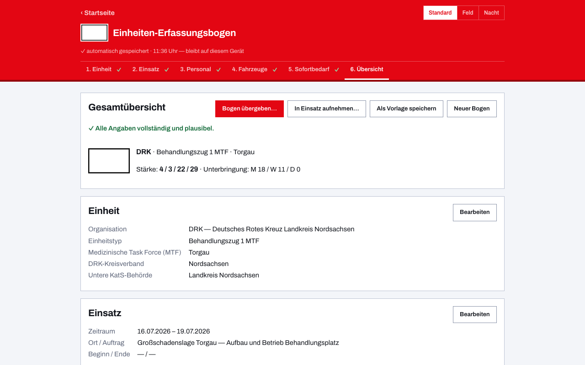

Einheiten-Erfassungsbogen für den Katastrophenschutz
Die Katastrophenschutz-Einheiten der Länder sind auf dem Papier genau beschrieben: Verordnungen und Erlasse legen fest, welche Züge und Teileinheiten es gibt, wer sie trägt und wie sie funken. Im Einsatz muss genau diese Gliederung als Stärkemeldung beim Meldekopf ankommen. Dieses kostenlose Online-Tool bringt die Aufstellungen mehrerer Bundesländer bereits mit — als fertige Beispielbögen, die du lädst, anpasst und per QR-Code ohne Internet übergibst.
Landesvorlagen: rund 278 fertige Bögen
Für elf Bundesländer sind die KatS-Einheiten als Beispielbögen hinterlegt, jeweils abgeleitet aus den öffentlichen Regelwerken des Landes — mit Träger, Teileinheiten, Stärken und Funkrufnamen:
| Bundesland | Inhalt |
|---|---|
| Niedersachsen | 33 Bögen: die KatS-Einheiten samt Teileinheiten und dem jeweiligen Träger (Feuerwehr, Hilfsorganisationen) |
| Sachsen | 33 Bögen nach der SächsKatSVO, Funkrufnamen nach den sächsischen Richtlinien |
| Brandenburg | 8 Bögen — die KatSV des Landes regelt Einheiten, aber keine Fahrzeugtypen und Teileinheiten im Detail |
| Thüringen | 45 Bögen aus den Gliederungen der ThürKatSVO, mit Summenprüfung je Verband |
| Baden-Württemberg | 14 Bögen nach der VwV KatSD — Führungs-, Brandschutz-, Sanitäts-, Wasserrettungs- und Veterinärzüge als geschlossene Einheiten |
| Rheinland-Pfalz | 37 Bögen — Fähigkeitsmodule nach der KatS-LVO 2025 und der verbindlichen Handlungsanweisung des LfBK dazu |
| Mecklenburg-Vorpommern | 28 Bögen nach den Grundstrukturen des LPBK M-V, über alle acht unteren KatS-Behörden gestreut |
| Hessen | 38 Bögen nach dem Konzept „Katastrophenschutz in Hessen", Fahrzeugkennzahlen amtlich nach dem Funkrufnamenkatalog |
| Bayern | 12 Bögen — Feuerwehr-Hilfeleistungskontingente und BRK-Schnell-Einsatz-Gruppen statt Landesverordnung, da Bayern keine landesweite KatS-StAN kennt |
| Berlin | 18 Bögen nach der KatSD-VO — ABC-, Betreuungs-, Brandschutz- und Sanitätsdienst (BHP 25, PTZ 10, BTP 500), landesweite Stückzahlen statt Landkreisen |
| Nordrhein-Westfalen | 13 Bögen nach dem Landeskonzept VüH-SanBt NRW — Einsatzeinheit NRW und Behandlungsplatz 50 NRW, statt einer Verordnung mit Anlage |
In der App findest du die Bögen in der Fußzeile unter „Beispielbögen", geordnet nach Bundesland und Einheit. Jeder Bogen ist ein Startpunkt: Du passt Standort, tatsächliche Besetzung und Abweichungen an und speicherst ihn als eigene Vorlage. Weitere Länder folgen — Wünsche und Korrekturen gern über GitHub.

Kräfteerfassung im Verband
KatS-Einheiten rücken selten allein aus. Zug- und Verbandsführer sammeln die Bögen ihrer Einheiten in der App unter einem Einsatz: Die Stärken werden laufend summiert, mit Zwischensummen je Zug, und der ganze Verband meldet geschlossen weiter — als Sammel-PDF, Datei oder QR-Code. Dieselbe Funktion trägt den Meldekopf am Bereitstellungsraum, wenn Einheiten verschiedener Träger eintreffen.
Für die Übung: auch den Sprechfunk
Geübt wird häufiger als eingesetzt, und in Schritt 2 kennzeichnest du einen Bogen ausdrücklich als Übung, damit niemand ihn für eine echte Meldung hält. Erfasst du die Kräfte einer KatS-Übung, brauchst du meist auch den Funkverkehr dazu — dafür gibt es vom selben Autor den Sprechfunk-Übungsgenerator: Er verteilt vorgefertigte Funksprüche auf die Teilnehmer, druckt Meldevordruck und Nachrichtenvordruck als PDF aus und begleitet die Übung danach live mit Fortschritt und Funklast für die Übungsleitung. Auch er ist kostenlos, braucht keine Anmeldung und liegt als Open Source unter der EUPL-1.2 offen.
Gemacht für den Ausfall der Infrastruktur
Katastrophenschutz heißt: Es ist damit zu rechnen, dass Strom, Mobilfunk und Internet fehlen. Deshalb arbeitet die App nach dem ersten Aufruf vollständig offline, speichert ausschließlich lokal und übergibt Bögen per QR-Code von Bildschirm zu Kamera — ohne Server, ohne Kopplung, ohne Netz. Warum du dabei trotzdem nicht auf das gewohnte Papier verzichten musst, zeigt der Vergleich Papier oder digital?
Häufige Fragen zum Katastrophenschutz
Mein Bundesland fehlt — kann ich die App trotzdem nutzen?
Ja. Du kannst jeden Bogen frei ausfüllen und als eigene Vorlage speichern; die Landesvorlagen sind Komfort, keine Voraussetzung. Und wenn du die Aufstellung deines Landes beisteuern möchtest: Der Generator dafür ist Open Source.
Sind die Vorlagen amtlich?
Nein — sie sind aus den öffentlich zugänglichen Verordnungen und Erlassen der Länder abgeleitet und sorgfältig geprüft, aber kein amtliches Dokument. Maßgeblich bleibt die jeweilige Landesregelung; deshalb kannst du jede Vorbelegung frei anpassen.
Welche Organisationen deckt der Bogen ab?
Alle BOS und Hilfsorganisationen: Feuerwehr, THW, DRK, Johanniter, Malteser, ASB, DLRG, Rettungsdienst, Polizei und Bundeswehr. Eigene Einstiege gibt es für das THW, die Feuerwehr, die DLRG, das DRK, die Johanniter, die Malteser und den ASB.